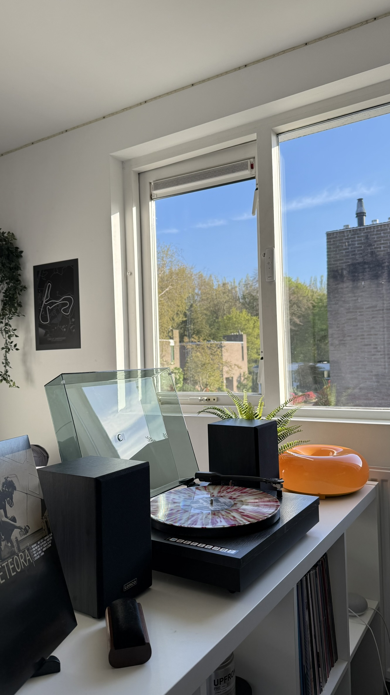

Muziek
Ik hou van muziek. Zonder muziek zou ik niet kunnen leven. Muziek betekent heel veel voor mij en laat ook mijn persoonlijkheid zien. Van welke nummers ik hou, van welke artiesten ik hou en van welke albums ik hou. Ik ga bij deze pagina vertellen over mijn muziek smaak en wat het voor mij betekent.
Iedereen heeft wel een muzieksmaak. Je kan bijvoorbeeld houden van pop, rock enzovoort. Ik ben opgegroeid met de muzieksmaak van voornamelijk mijn vader. Hij houdt van rock. Vroeger toen ik nog jong was en ik zat achterin de auto zette mijn ouders altijd hetzelfde nummer aan. Het nummer heet Paradise van Coldplay. Ik zat altijd met een glimlach naar het nummer te luisteren. Nu luister ik gewoon muziek, maar ik vind het altijd grappig om nummers te vinden die ik al ken van vroeger.
Vinyl's
Ik ben vorig jaar begonnen met het verzamelen van vinyl's of makkelijker gezegd platen. Als mensen horen dat ik platen verzamel denken ze dat ik gek ben. De ene zegt dat heel oud is en de ander zegt tegen mij dat ik ook gewoon muziek kan afspelen via mijn telefoon. Dat zegt mijn moeder tegen mij. Makkelijk gezegd haat ik die woorden. Ik heb genoeg vrienden die zeggen van je kan het ook gewoon op spotify luisteren. Gelukkig ken ik ook vrienden zie ook platen verzamelen, dus ik ben gelukkig niet de enige. Als je platen wilt beluisteren heb je een platenspeler nodig. Ik ben begonnen met een all in 1 setup Om te kijken of het leuk vond of niet. Ik vind het zo leuk dat ik een maand geleden ben geüpgrade naar een hoog niveau platenspeler setup. Ik heb ook nu rond de 60 platen. Één van mijn favouriete platen is in mijn collectie Meteora van Linkin Park

Favouriete artiesten
Ik heb super veel artiesten en bands die ik goed vind, maar ik ga mijn favouriete opnoemen.
| Artiesten |
| Coldplay |
| Pink Floyd |
| Red Hot Chili Peppers |
| Daft Punk |
| Guns N' Roses |
| Arctic Monkeys |
| Green Day |
| Muse |
| Linkin Park |
| Editors |
| Bruce Springsteen |
Lijst van mijn favouriete nummers
| Nummer | Artiest |
| November Rain | Guns N' Roses |
| Sex on Fire | King of Leon |
| Get Lucky | Daft Punk, Pharrel Williams |
| Somewhere Only We Know | Keane |
| Paradise | Coldplay |
| Mr. Brightside | The Killers |
| Jungleland | Bruce Springsteen |
| Fix You | Coldplay |
| With Or Without You | U2 |
| My Hero | Foo Fighters |
| The Racing Rats | Editors |
| Black | Pearl Jam |
| Ain't No Mountain High Enough | Marvin Gaye, Tammi Terrell |